조경산업기사 (2019-09-21 기출문제)
1과목: 조경계획 및 설계
1. 미국 컬럼비아 건축미술 박람회의 영향을 받아 조직된 단체는?
- 후생협회(N.R.A)
- 도시계획협의회(N.C.C.P)
- 운동장협회(N.P.F.A)
- 미국조경가협회(A.S.L.A)
(정답률: 91%)

2. 조선 시대 다산초당(茶山草堂)과 가장 관련이 없는 것은?
- 단상(段狀)의 화계
- 방지원도(方池圓島)
- 석가산
- 풍수지리설
(정답률: 53%)
3. 16세기 이탈리아 빌라 정원의 주된 공간 배치 요소가 아닌 것은?
- 수림대(Bosco)
- 후정
- 빌라(Villa)
- 중정
(정답률: 52%)
4. 전통적인 중국조경의 특성에 해당하는 것은?
- 대비보다 조화에 중점을 두었다.
- 축경식으로 자연을 모방하여 일정한 비율로 균일하게 축조하였다.
- 수려한 자연경관을 정원 내 사의적으로 묘사하였다.
- 자연경관을 축소하지 않고 1:1 비율로 정원에 묘사하였다.
(정답률: 68%)
5. 고대 그리스 시대의 것으로 현대 도시광장의 기원이 되는 것은?
- 포럼(Forum)
- 아고라(Agora)
- 아트리움(Atium)
- 페리스틸리움(Peristylium)
(정답률: 83%)
6. 장소는 미적(美的)이거나 회화적이어야 한다고 주장한 루엘린 파크의 설계자는?
- 가렛 에크보
- 제임스 로즈
- 앤드루 잭슨 다우닝
- 프레드릭 로우 옴스테드
(정답률: 72%)
7. 대추나무를 지칭하는 옛 한자명은?
- 이(李)
- 내(柰)
- 백(栢)
- 조(棗)
(정답률: 75%)
8. 도산(山) 모모야마 시대에 석등, 세수통 등 점경물을 설치하고 소공간을 자연 그대로 의 규모로 꾸민 정원 양식은?
- 다정(茶庭)
- 정토(淨土) 정원
- 고산수(故山水) 정원
- 침전식(寢殿式) 정원
(정답률: 81%)
9. 이용 후 평가(post occupancy evaIuation)에 대한 설명으로 틀린 것은?
- 이용자의 만족도를 제시한다.
- 시공 직후에 단기평가를 수행한다.
- 설계과정을 일방향적 흐름으로부터 순환과정으로 바꾸었다.
- 기존 환경의 개선 및 새로운 환경의 창조를 위한 자료를 제공한다.
(정답률: 77%)
10. 다음 설명에 해당하는 시각적 경관요소의 분류에 속하는 것은?
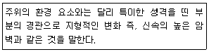
- 전(panoramic) 경관
- 지형(feature) 경관
- 초점(focaI) 경관
- 세부(detaiI) 경관
(정답률: 73%)
11. 다음 중 계흭용량을 결정하는 수용력(carrying capacity) 산출식으로 옳은 것은?
- 연간 이용자 수 × (1 - 최대일률) ÷ 회전율
- (연간 이용자 수 + 최대일률) × 회전율
- 연간 이용자 수 ÷ 최대일률 × 회전율
- 연간 이용자 수 × 최대일률 × 회전율
(정답률: 76%)
12. 조경가를 세분된 분야로 구분할 때, 주로 대규모 프로젝트에 관여하며 종합적 사고력 (합리성)을 필요로 하는 제너럴리스트(generaIist)의 입장을 취하는 분야는?
- 조경계획가
- 조경설계가
- 조경기술자
- 조경원예가
(정답률: 81%)
13. 다음 설명의 정책 방향이 포함된 계획은?
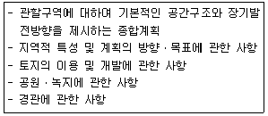
- 광역도시계획
- 도시ㆍ군기본계획
- 도시ㆍ군관리계힉
- 지구단위계획
(정답률: 77%)
14. 다음 도시공원 종류들 가운데 공원시설 부지 면적 비율 기중이 ‘100분의 50 이하’에 해당하는 것은?
- 근린공원
- 체육공원
- 어린이공원
- 묘지공원
(정답률: 67%)
15. 조경계획에서 사용되는 설문지 작성 시 주의사항을 설명한 것으로 틀린 것은?
- 설문을 배치할 때 긍정적인 질문과 부정적인 질문을 섞어서 나열하도록 한다.
- 자유응답설문보다 제한응답설문으로 구성하면 설문시간을 많이 줄일 수 있다.
- 설문작성을 위해 인터뷰 혹은 현장방문을 통한 예비조사를 하는 것이 바람직하다.
- 원활한 설문작성을 위해 세부적인 사항의 질문을 먼저 하고 그 다음에 일반적인 사항으로 넘어가도록 한다.
(정답률: 84%)
16. 우리나라 농촌마을에 남아 있는 마을숲의 기능 중 가장 많이 나타나는 기능은?
- 비보기능
- 쉼터기능
- 풍치기능
- 제사기능
(정답률: 63%)
17. 리조트(resort) 개발을 위한 입지조건에서 기본적 요건으로 가장 거리가 먼 것은?
- 일상생활권과 입전할 것
- 공간(환경ㆍ 시설)에 충분한 여유가 있을 것
- 흥미 대상(본다, 먹는다, 한다)이 있을 것
- 프라이버시나 자유로움이 확보되어 있을 것
(정답률: 89%)
18. 관찰자가 물체를 보고 형상을 판별할 수 있는 범위는?
- 지선
- 소점
- 기간
- 시야
(정답률: 88%)
19. 그림과 같은 도면에서 평면도로 가장 적합한 것은?
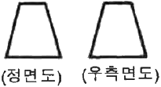
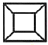
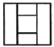
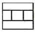
(정답률: 90%)
20. 식물이 질감과 색채를 이용하여 공간감을 느끼게 할 수 있다. 다음 설명 중 틀린 것은?
- 중간 밝기의 녹색은 밝은 녹색과 어두운 녹색 사이의 점진적 요소 역할을 한다.
- 어두운 색채의 잎을 갖는 식물은 관찰자로부터 멀어지는 듯이 보이고, 밝은 색채의 잎을 갖는 식물은 관찰자에게 다가오는 듯이 보인다.
- 고운 질감의 식물은 멀어져 가는 듯이 보이는 데 비해 거친 질감의 식물은 접근하는 것처럼 느껴진다.
- 거친 질감은 큰 잎이나 두텁고 무거운 감이 있는 식물에서 나타나며 고운 질감은 많은 수의 작은 잎, 작고 얇은 가지가 있는 식물에서 나타난다.
(정답률: 50%)
2과목: 조경식재
21. 다음 중 회색 또는 암갈색 나무껍질이 세로로 갈라지면서 떨어져 얼룩무늬를 형성하는 수종은?
- 소나무(Pinus densifIora)
- 벽오동(Firmiana simpIex)
- 자작나무(BetuIa pIatyphylla)
- 양버즘나무(PIatanus occidentaIis)
(정답률: 59%)
22. 버드나무과(科) 수종에 대한 설명으로 옳지 않은 것은?
- 이른 봄에 푸른 잎이 난다.
- 봄철 하얀 솜털은 암그루에서만 날리는 종모(씨털)이다.
- 왕버들은 능수버들에 비해서 가지가 아래로 처지지 않는다.
- 구양버들의 학명은 Salix pseudolasiogyne, 능수버들의 학명은 Salix babylonica이다.
(정답률: 67%)
23. 다음 그림이 나타내는 중앙분리대의 식재형식은?
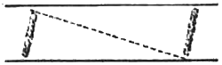
- 군식법
- 무늬식
- 평식법
- 루버식
(정답률: 78%)
24. 다음 중 추식(가을심기) 구근에 해당되지 않는 것은?
- 튤립
- 달리아
- 구근아아리스
- 히아신스
(정답률: 59%)
25. 다음 그림과 같은 형태를 갖는 수종은?
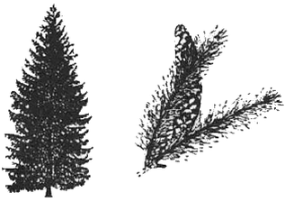
- 리기다소나무
- 방크스소나무
- 일본잎갈나무
- 독일가문비
(정답률: 69%)
26. 다음 설명의 ()안에 들어갈 용어로 알맞은 것은?
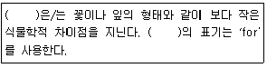
- 보통명
- 변종
- 품종
- 이명
(정답률: 78%)
27. 시야를 방해하지 않으면서 공간은 분할하거나 한정하는 데 이용할 수 있는 식물 재료는?
- 대교목
- 소교목
- 관목
- 지피류
(정답률: 81%)
28. 개체군 내의 개체가 주어진 공간에 퍼져 있는 형태를 개체군 분산형태라고 하는 데, 다음 중 이에 해당되지 않는 것은?
- 괴상형
- 중립형
- 균일형
- 임의형
(정답률: 56%)
29. 다음 수목의 생장 및 생리에 관한 설명으로 틀린 것은?
- 대부분의 나자식물은 정아지가 측지보다 빨리 자람으로써 원 추형의 수관형을 유지한다.
- 오동나무의 뿌리에서 나오는 근맹아(root sprout)는 부정아에서 생겨난 것이다.
- 단풍나무는 늦여름에 일장이 길어지면 줄기 생장이 촉진되고 동아 형성이 정지된다.
- 양수는 음수보다 광포화점이 높다.
(정답률: 53%)
30. 일반적인 양수(陽樹)의 특징에 대한 설명으로 틀림 것은?
- 유묘 시에는 생장이 빠르나 나이가 많아짐에 따라 차차 느려진다.
- 지엽이 밀생하고 가지의 배열이 조밀하며 아래 가지가 내부로 향한다.
- 가지는 소생하고 수관이 개방적이며, 아래가지는 일찍 말라 떨어져 버린다.
- 줄기의 선단부와 굵은 가지가 남쪽 또는 햇빛이 있는 쪽으로 자라는 습성이 있다.
(정답률: 64%)
31. 개잎갈나무의 생장 형태로 가장 적합한 것은?
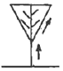
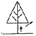
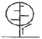
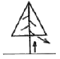
(정답률: 68%)
32. 수고가 1.2m 이하인 수목에 자주를 할 필요가 있은 때 이용하기 적합한 지주의 설치형태는?
- 단각형(單却形)
- 이각형(二却形)
- 삼각형(三却形)
- 사각형(四却形)
(정답률: 64%)
33. 자유식재의 개념으로 옳지 않은 것은?
- 제 2차 세계대전 이후 구미 각국에서 시작 되었다.
- 풍토적인 제약이나 전통적인 형식에 구속되지 않는다.
- 기능성에 큰 비중을 두어 단순 명쾌하다.
- 전체적인 형태는 자연풍경식인 경우가 많다.
(정답률: 54%)
34. 토양 단면에서 바로 위에 있는 층보다 부식이 적어 갈색 또는 황갈색을 띠며, 가용성 염기류가 많고 비교적 견밀한 특징을 구비한 토양층은?
- 모재층
- 용탈층
- 집적층
- 유기물층
(정답률: 54%)
35. 식물의 분류 중 덩굴성 식물에 해당하는 것은?
- 산수국
- 흰말채나무
- 능소화
- 불두화
(정답률: 82%)
36. 우리나라에서 자생하는 참나무류는 성상에 따라 크게 2가지로 구분할 수 있다. 다음 중 성상이 다른 수종은?
- 붉가시나무(Quercus aceta)
- 떡갈나무(Quercus dentata)
- 졸참나무(Quercus serrata)
- 갈참나무(Quercus aliena)
(정답률: 71%)
37. 다음 중 벤트 그라스의 설명으로 틀린 것은?
- 일반적으로 가장 품질이 좋은 잔디이다.
- 재질이 매우 곱고, 잎의 폭이 3~4mm로 매우 짧은 다발형이다.
- 질소질 비료 요구량이 높도, 세심한 관리와 주의가 요구된다.
- 주로 골프장 그린이나 스포츠 경기장 등 집약적인 잔디 초지에 광범위하게 쓰인다.
(정답률: 56%)
38. 수목은 내한성에 따라 온난지와 한랭지로 구분할 수 있다. 다음 중 한랭지에 적합한 수 종은?
- 굴거리나무
- 동백나무
- 후박나무
- 쥐똥나무
(정답률: 54%)
39. 공해에 약한 식물, 강한 산성에서 자라나는 식물 등 그 식물이 자라고 있는 곳의 환경조건을 나타내는 식물을 무엇이라고 하는가?
- 식별식물
- 지표식물
- 기준식물
- 표식식물
(정답률: 78%)
40. 식재공사 시 뿌리돌림을 할 경우에 분의 크기는 근원직경의 몇 배로 작업하는 것이 가장 이상적인가?
- 2배
- 4배
- 8배
- 10배
(정답률: 86%)
3과목: 조경시공
41. 횡선식 공정표에 대한 특징으로 옳은 것은?
- 네트워크 공정표에 비해 작성이 어렵다.
- 작업의 선후관계를 파악하기 어렵다.
- 개략적인 공사내용을 파악하기 어렵다.
- 대규모 공사의 공정관리에 적합하다.
(정답률: 57%)
42. 다음 설명에 적합한 시멘트의 종류는?
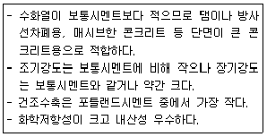
- 백색포틀랜드시멘트
- 조강포틀랜드시멘트
- 중용열포틀랜드시멘트
- 실리카시멘트
(정답률: 72%)
43. 합리식에서 강우강도의 특성에 대한 설명으로 틀린 것은?
- 강우강도의 단위는 mm/h이다.
- 강우강도는 지역에 따라 다르다.
- 강우강도가 커지면 유출량은 작아진다.
- 강우계속시간이 늘어나면 강우강도는 작아진다.
(정답률: 75%)
44. 시멘트의 저장과 관련된 설명으로 틀린 것은?
- 보관 후 사용할 시멘트는 일반적으로 50℃ 정도 이하의 온도에서 사용하는 것이 좋다.
- 시멘트를 저장하는 창고는 시멘트가 바닥에 쌓여서 나오지 않는 부분이 생기지 않도록 한다.
- 3개월 이상 장기간 저장한 시멘트는 사용에 앞서 재시험을 실시하여 품질을 확인한다.
- 현장에서 목조창고의 마룻바닥과 지면 사이의 거리는 0.1m를 표준으로 하면 좋다.
(정답률: 62%)
45. 자연상태의 토량이 사질토는 1500m3, 점질토는 2000m3로 이루어져 있다. 이를 모두 굴착하여 다른 공사현장으로 이동 후 성토ㆍ다짐했다면 토량은 얼마인가? (단, 사질토는 L=1.2C, C=0.9, 점질토의 L=1.3, C=0.9이다.)
- 3150m3
- 3600m3
- 3950m3
- 4400m3
(정답률: 45%)
46. 축척 1/1000의 단위면적이 5m2일 때 1/3000 축척에서 단위면적은?
- 0.6m2
- 35m2
- 40m2
- 45m2
(정답률: 64%)
47. 등고선의 성질에 관한 설명으로 틀린 것은?
- 같은 경사면에는 같은 간격의 평행선이 된다.
- 등고선은 배수방향과 반드시 직교한다.
- 등고선은 절벽이나 동굴 등 특수한 지형 외에는 합치거나 교차하지 않는다.
- 요(凹)선으로 표시한 곡선은 안부(鞍部) 가까이에서 곡률이 크고 계곡 밑으로 감에 따라 곡률이 작게 한다.
(정답률: 51%)
48. 다음 중 잔디깍기에 지장을 주지 않고 잔디밭에 사용하기 편리한 살수기(sprinkler head)는 어느 것인가?
- 분무 살수기(spray head)
- 분무입상 살수기(pop-up spray head)
- 회전 살수기(rotary head)
- 특수 살수기(specialoty head)
(정답률: 74%)
49. 물 등의 유체 흐름을 매우 느리게 하여 이 시설물을 통과하면서 유기 및 무기성 고형물을 침강시켜 자정기능을 갖는 생태복원 시설은?
- 인공습지
- 비탈면녹화
- 옥상녹화
- 인공실물섬
(정답률: 71%)
50. 다음 도로의 횡단면도에서 AB의 수평거리는?
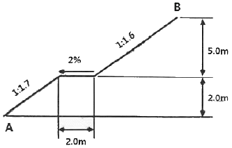
- 8.1m
- 12.3m
- 13.4m
- 18.5m
(정답률: 58%)
51. 다음 중 목재를 건조하는 목적이 아닌 것은?
- 수축을 방지한다.
- 부식을 방지한다.
- 강도를 증진시킨다.
- 비중을 증가시킨다.
(정답률: 74%)
52. 다음 특성을 갖고 열가소성 수지는?
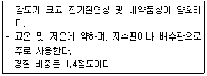
- 페놀수지
- 염화비닐수지
- 아크릴수지
- 폴리에스테르수지
(정답률: 56%)
53. 콘크리트 시공에 관한 설명으로 틀린 것은?
- 거푸집의 내면에는 박리제를 발라야 한다.
- 콘크리트를 타설 후 양생할 때에는 충분한 수분이 공급되어야 한다.
- 콘크리트를 칠 때 30℃ 이상이 되면 수화 작용이 빨라 장기 강도가 증대된다.
- 표준양생(standard curing)은 20±3℃로 유지하면서 수중 또는 습도 100퍼센트에 가까운 습윤상태에서 실시하는 양생이다.
(정답률: 57%)
54. 수목 굴취공사의 일위대가 작성에 대한 설명으로 틀린 것은?
- 분의 크기는 흉고직경 4~5배를 기준으로 한다.
- 뿌리 절단 부위의 보호를 위한 재료비는 별도 계상한다.
- 교목류 수종의 굴취 시 분이 없는 경우에는 굴취품의 20%를 감한다.
- 굴취 시 야생일 경우에는 굴취품의 20%를 가산한다.
(정답률: 42%)
55. 다음 중 플라이애쉬를 콘크리트에 사용하여 얻을 수 있는 장점에 해당되지 않는 것은?
- 워커빌리티가 개선된다.
- 건조 수축이 적어진다.
- 수화열이 낮아진다.
- 초기강도가 높아진다.
(정답률: 55%)
56. 조경공사 중 돌쌓기에 관한 설명으로 틀린 것은?
- 찰쌓기의 높이는 1일 1.2m를 표준으로 한다.
- 메쌓기는 찰쌓기에 비하여 토압증대의 우려가 높다.
- 찰쌓기의 전면 기울기는 높이 1.5m까지 1:0.25를 기준으로 한다.
- 호박돌쌓기는 줄쌓기를 원칙으로 하고 튀어나오거나 들어가지 않도록 면을 맞춘다.
(정답률: 51%)
57. 금속의 부식방지에 관한 대책으로 옳지 않은 것은?
- 부분적으로 녹이 나면 즉시 제거할 것
- 아연 또는 주석용액에 담가서 도금할 것
- 이종(異種) 금속을 인접 접촉시킬 것
- 표면을 평활하게 하고 가능한 한 건조상태로 유지할 것
(정답률: 79%)
58. 기본벽돌을 1.0B로 1000m2의 담장을 치장쌓기 할 때 소요되는 노무비는? (단, 벽돌 10000매당 소요되는 치장벽돌공은 2.5인, 보통인부는 2.0인, 치장벽돌공 노임은 100,000원, 보통인부 노임은 50000원이다.)
- 5000000원
- 5215000원
- 5250000원
- 5500000원
(정답률: 52%)
59. 빗물이 제거되는 방법 중 배수계획에서 가장 고려해야 할 사항은?
- 증발작용에 의한 제거
- 증산작용에 의한 제거
- 표면유출에 의한 제거
- 식물체의 호흡 작용에 의한 제거
(정답률: 74%)
60. 일반조경공사의 특성이라고 볼 수 없는 것은?
- 공종의 다양성
- 공종의 소규모성
- 규격화 및 표준화의 곤란성
- 공사시기 및 자재구입의 용이성
(정답률: 54%)
4과목: 조경관리
61. 다음 중 전지ㆍ전정 작업을 할 때 일반적으로 잘라야 하는 가지로 적합하지 않은 것은?
- 개화ㆍ결실 가지
- 안으로 향한 가지
- 아래를 향한 가지
- 줄기의 중간부에 돋아난 가지
(정답률: 80%)
62. 공원에서 사고가 발생하였을 때 사고처리 절차로 옳은 것은?
- 사고발생 통보→관계자 통보→사고자 응급처치→병원호송→사고 상황 파악
- 사고발생 통보→사고 상황 파악→사고자 응급처치→병원호송→관계자 통보
- 사고발생 통보→사고 상황 파악→관계자 통보→사고자 응급처치→병원호송
- 사고발생 통보→사고자 응급처치→병원호송→관계자 통보→사고 상황파악
(정답률: 71%)
63. 농약 살포 방법으로 옳은 것은?
- 심한 태풍이나 비바람이 지나간 직후에는 살포하는 것이 흡수 효과가 좋다.
- 살충제와 살균제를 혼합사용하며, 기온이 높을수록 효과가 좋다.
- 살충제 중 독한 약제는 흐린 날 살포하는 것이 좋다.
- 전착제를 완전히 용해시킨 뒤 살포액에 넣는 것이 좋다.
(정답률: 60%)
64. 다음 중 소나무재선충병의 감염 증세가 아닌 것은?
- 수지(송진) 유출의 감소
- 침엽에서 증산량의 감소
- 침엽이 반 정도 자라면서 변색
- 수체 함수율의 감소 및 목질부 건조
(정답률: 49%)
65. 아스팔트 및 골재가 떨어져 나가는 현상으로 아스팔트의 부족과 혼합물의 과열, 혼합물량 등이 주요 원인이 되어 나타나는 아스팔트 포장의 파손 현상은?
- 균열
- 침하
- 파상요철
- 박리
(정답률: 63%)
66. 조경수의 전정 작업을 목적별로 분류한 것에 해당되지 않는 것은?
- 조형을 위한 전정
- 생리조정을 위한 전정
- 생장을 조정하기 위한 전정
- 뿌리의 세근 발근촉진을 위한 단근 전정
(정답률: 67%)
67. 공원 내의 안내소, 전시관, 관리실 등 건축물의 유지관리비는 건물의 제비용 백분율로 나타낼 때 일반적으로 얼마 정도인가?
- 25%
- 50%
- 75%
- 90%
(정답률: 53%)
68. 농약의 효력을 충분히 발휘하도록 하기 위하여 첨가하는 물질을 일컫는 용어는?
- 기피제
- 훈증제
- 유인제
- 보조제
(정답률: 77%)
69. 조경의 관리 작업 항목 중 부정기적으로 작업이 이루어지는 것은?
- 점검
- 청소
- 수목의 손질
- 식물의 보식
(정답률: 75%)
70. 야영장에서 내부가 고사된 수목에 겉만 보고 텐트 줄을 지지하였는데, 폭풍으로 고사목이 쓰러져 야영객이 다쳤다면 다음 중 어떤 유형 사고에 가장 근접한가?
- 설치하자에 의한 사고
- 관리하자에 의한 사고
- 이용자 부주의에 의한 사고
- 자연재해의 의한 사고
(정답률: 71%)
71. 장미의 동기 진정시기로 가장 적합한 것은?
- 발아할 눈이 자랐을 때
- 발아할 눈이 트고 난후
- 발아할 눈이 휴면기일 때
- 발아할 눈이 부풀어 오를 때
(정답률: 52%)
72. 테니스 코트에 뿌리는 소금과 염화칼슘의 역할이 아닌 것은?
- 응고작용
- 보습효과
- 동결방지
- 지력보강
(정답률: 49%)
73. 벤치ㆍ야외탁자의 전반적인 관리방안으로 적합하지 않은 것은?
- 이용자 수가 설계 시의 추정치보다 많은 경우에는 이용실태를 고려하여 개소를 증설하여 이용자의 편의를 도모한다.
- 노인, 주부 등이 장시간 머무르는 곳의 콘크리트재 벤치는 인체와 접촉부위가 차가워지기 쉬우므로 목재로 교체한다.
- 바닥의 지면에 물이 고인 경우에는 배수시설을 설치한 후 흙을 넣고 충분하게 다지거나 지면을 포장한다.
- 그늘이나 습기가 많은 장소에는 목재벤치를 설치하도록 한다.
(정답률: 79%)
74. 다음 중 2년생 잡초에 대한 설명으로 틀린 것은?
- 지칭개, 망초 등이 속한다.
- 로제트(rosette) 형태로 월동한다.
- 주로 온대지역에서 볼 수 있는 잡초이다.
- 월동 이후 화아 분화하여 개화, 결실을 한 후 고사한다.
(정답률: 55%)
75. 농약의 사용목적에 따른 분류에 해당하는 것은?
- 유기인계
- 살응애제
- 호흡저해제
- 과립수화제
(정답률: 65%)
76. 다음 곤충 가운데 식엽성(葉植性) 해충이 아닌 것은?
- 미국흰불나방
- 오리나무잎벌레
- 천막벌레나방
- 밤나무혹벌
(정답률: 67%)
77. 다음 중 지하수위가 높은 저습기 또는 배수가 불량한 곳에서 주로 나타나는 주요한 토양생성 작용은?
- 라테라이트화 작용(laterization)
- 글라이화 작용(gleization)
- 포드졸화 작용(podzoliztion)
- 석회화 작용(calcification)
(정답률: 54%)
78. 풀베기, 덩굴제거 등에 사용되는 무육톱의 삼각톱날 꼭지각은 몇 도(°)로 정비하여야 하는가?
- 12°
- 25°
- 38°
- 45°
(정답률: 59%)
79. 토사포장의 개량(改良) 방법으로 적합한 것은?
- 지반치환공법
- 지하수상승법
- 노면골재감소법
- 규격화의 곤란성
(정답률: 75%)
80. 조경업무의 성격상 관리계획을 체계적으로 수립하는 데 있어서 제한요인이라고 볼 수 없는 것은?
- 관리대상의 자연성
- 관리규모의 협소성
- 이용자의 다양성
- 규격화의 곤란성
(정답률: 45%)